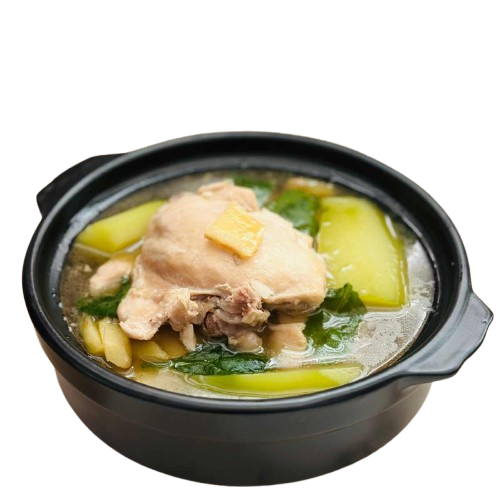
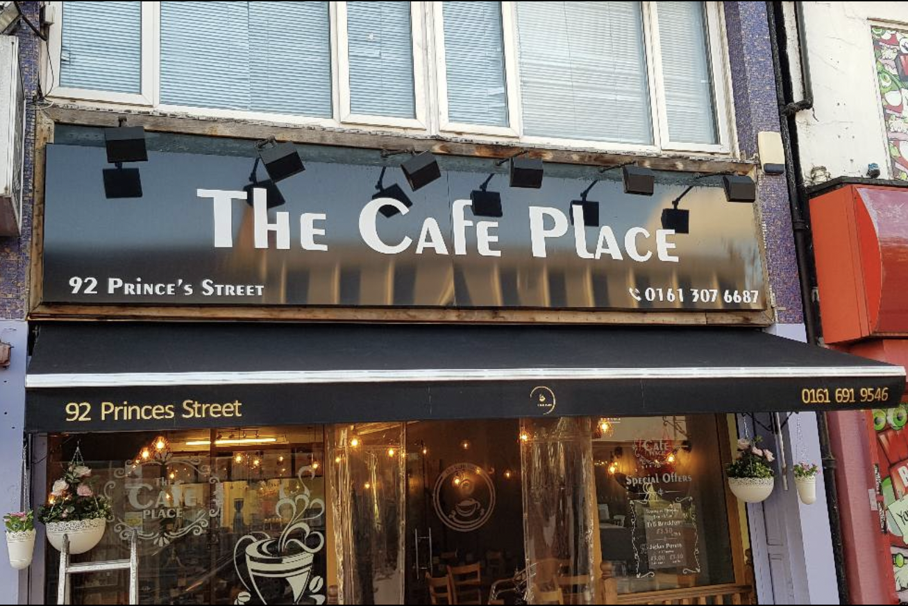
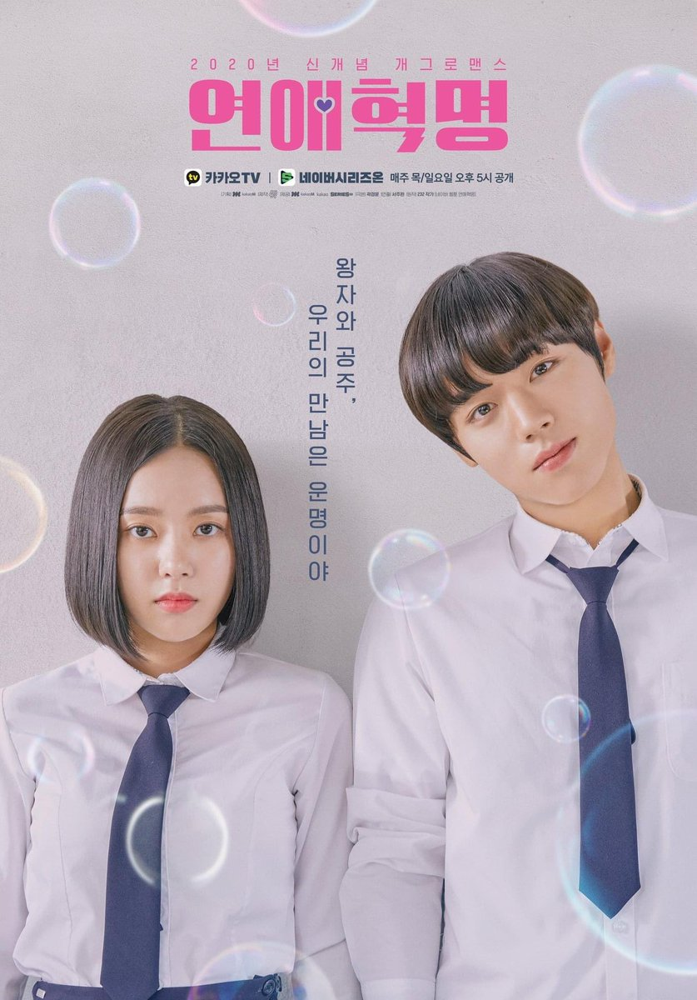
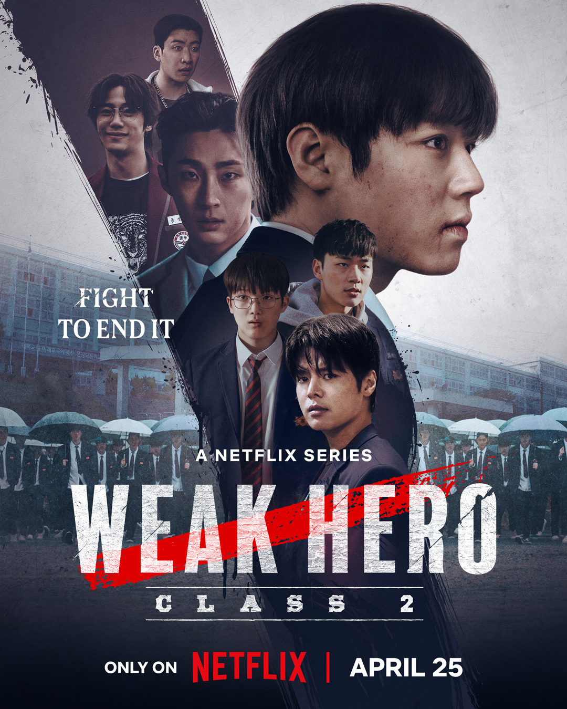

About Me
Hello! I'm Geraldine i want you to introduce my wants first, I do love matcha and
This blog is created using basic HTML.
My Favorite Foods
Adobo
Adobo is one of my favorite dishes because of its rich, savory flavor that perfectly combines salty, tangy,
and sometimes a hint of sweetness. I like it because it’s very comforting and reminds
me of home-cooked meals with my family.
It’s also a versatile dish since you can use chicken, pork, or even both, and it still tastes amazing.
Eating adobo always makes me feel connected to Filipino culture and tradition.

Sinigang
Sinigang is one of my favorites because of its refreshing sour taste that makes it unique compared to other dishes. I like it because it’s comforting,
especially on rainy days, and it goes perfectly with hot rice.
The mix of vegetables, meat, and tamarind broth makes it both healthy and delicious.
It reminds me of family gatherings where everyone enjoys it together, which makes the dish extra special for me.

Tinola
Tinola is one of my favorite dishes because it has a light, comforting broth that feels very soothing,
especially when I’m not feeling well. I like it because the combination of chicken, green papaya or sayote,
and malunggay leaves makes it both healthy and delicious.
The warm soup is perfect during cold or rainy days, and it always reminds me of home-cooked meals made with care.

My Favorite Place
Cafe
Café is my favorite place because it has a cozy and relaxing atmosphere that makes me feel at peace.
I like spending time there because I can enjoy a cup of coffee or snacks while studying, working, or simply relaxing.
The quiet background music and warm ambiance make it the perfect spot to focus or to spend time with friends.
Being in a café gives me comfort and inspiration, which is why I enjoy going there so much.

My Favorite Kdramas
Love Revolution
Love Revolution is one of my favorite Kdramas because it has a fun and lighthearted story about young love and friendship.
I like it because the characters are very relatable, and it shows the excitement and challenges of being a student while experiencing first love.

Weak Hero
Weak Hero is my favorite because of its inspiring storyline that shows courage and determination.
I like it because the main character uses his intelligence and strategies instead of strength, which makes the fights more interesting and meaningful.

Study Group
Study Group is a Kdrama I enjoy because it mixes school life with action and determination.
I like it because it shows how students face struggles not only in academics but also in life,
and how teamwork and perseverance can help overcome challenges.
Favorite Subjects
Philosophy
Philosophy is one of my favorite subjects because
it makes me think deeply about life, values, and the meaning of existence.
I like it because it challenges me to question and understand different perspectives.
HTML
HTML Subject is my favorite because it teaches me how to build and design websites.
I enjoy it since it allows me to be creative and practical at the same time, turning ideas into real web pages.
JAVA
Java is another favorite because it is a powerful programming language used in many applications.
I like it because it improves my problem-solving skills and helps me learn how software works in real life.
Physical Education
P.E is one of my favorites because it keeps me active and healthy.
I like it because it allows me to play sports, exercise, and bond with my classmates while staying fit.
.png)
Follow Me
Connect with me on these platforms: